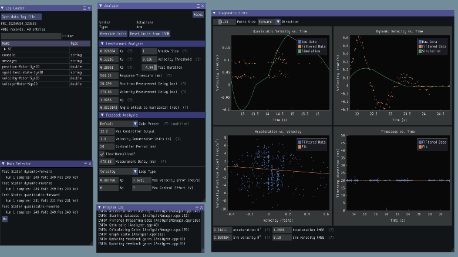
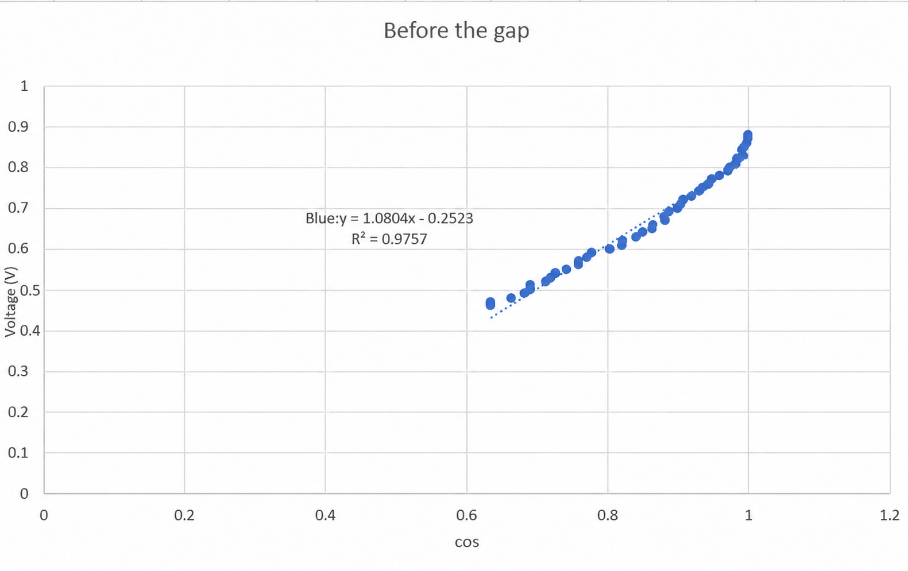
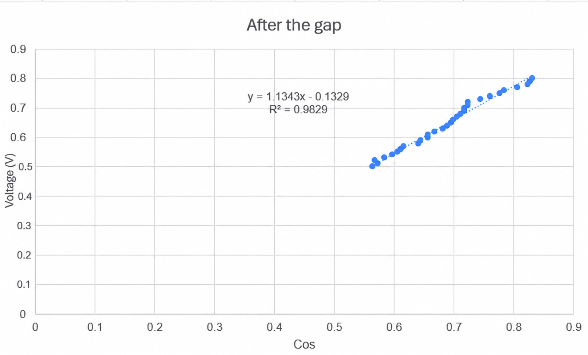

System Identification
for a Robotic Arm
Comparing WPILib SysId feedforward estimates with independent voltage–angle measurements on Falcon 500 and Kraken X60 arm mechanisms.
FRC Essay Competition
Can measured model parameters reduce manual tuning?
Our team investigated whether SysId estimates were consistent with a separate experimental estimate of gravity compensation for an FRC-style robotic arm. The motivation was practical: parameter tuning before competition often takes repeated manual adjustments.
Team members: 唐盛鈞, 曾柏鈞 (Po Chun Tseng), and 李文喆.

Compare a manual estimate with SysId
Our study used voltage tests from 0.30 to 0.80 V in 0.01 V increments, giving 51 voltage settings for each motor. Starting and target angles were kept within 10° to limit movement during the manual comparison.
The SysId procedure used quasistatic and dynamic tests in both directions, recording voltage, position, and velocity. We compared the resulting gravity-compensation estimate with the selected-region manual regression.

Close estimates in the selected data region
Manual estimate: 1.0804
SysId estimate: 1.0956
Manual estimate: 1.1343
SysId estimate: 1.1442
These are the gravity-compensation estimates we obtained for the selected data regions. We also observed a noticeable change in the Falcon voltage–angle data and analyzed regions on either side separately.


A check on the model, not every aspect of control
The close reported estimates gave us more confidence in using SysId to obtain feedforward parameters for these tested mechanisms. Comparing gravity compensation does not by itself validate every dynamic parameter, establish closed-loop tracking accuracy, or demonstrate that the same model will work on a different mechanism.
Further validation could compare commanded and measured motion under different loads, repeat the identification tests, and check the model away from the selected measurement region.